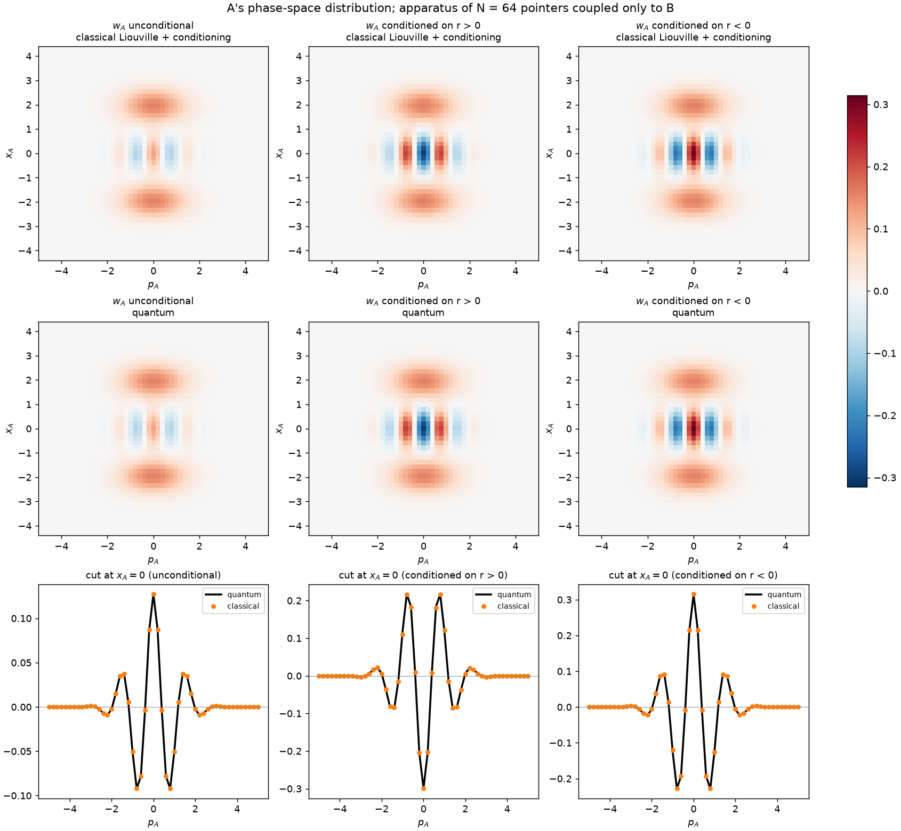

The one quantum ingredient
Where the quantum ingredient lives: the sign
- If $w_{AB} \ge 0$, this is ordinary Bayes. Bell himself noted that the original EPR state has a positive Wigner function, which is a local hidden-variable model.
- If $w_{AB}$ is signed, it's the same formula with signed weights. Non-Gaussian states violate Bell inequalities with exactly these position-type measurements.
- So the flow is local, the weights are signed, and Bell's theorem, which assumes non-negative weights, does not apply.
- Signed conditioning can create negativity: A's minimum drops from $-0.09$ to $-1/\pi \approx -0.318$. Ordinary conditioning never can.

0, conditioned on r<0; classical Liouville calculation (top), independent quantum calculation (middle), and cuts at x_A = 0 where they coincide (bottom)" style="max-height:440px;margin:0 auto">